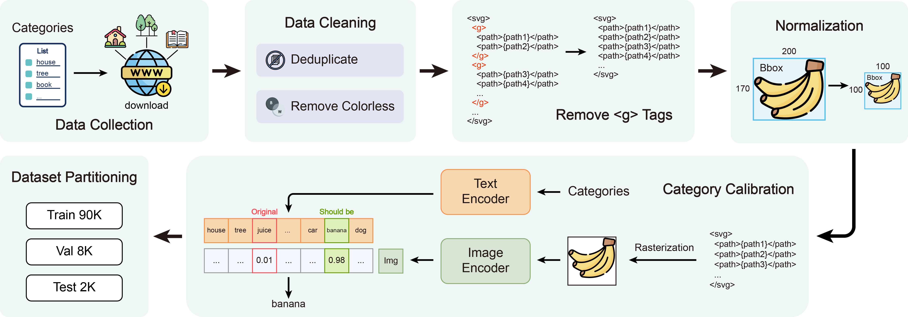

SVGBuilder
Component-Based Colored SVG Generation with
Text-Guided Autoregressive Transformers
(Anonymous)
Scalable Vector Graphics (SVG) are essential XML-based formats for versatile graphics, offering resolution independence and scalability. Unlike raster images, SVGs use geometric shapes and support interactivity, animation, and manipulation via CSS and JavaScript. Current SVG generation methods face challenges related to high computational costs and complexity. In contrast, human designers use component-based tools for efficient SVG creation. Inspired by this, SVGBuilder introduces a component-based, autoregressive model for generating high-quality colored SVGs from textual input. It significantly reduces computational overhead and improves efficiency compared to traditional methods. Our model generates SVGs up to 604 times faster than optimization-based approaches. To address the limitations of existing SVG datasets and support our research, we introduce ColorSVG-100K, the first large-scale dataset of colored SVGs, comprising 100,000 graphics. This dataset fills the gap in color information for SVG generation models and enhances diversity in model training. Evaluation against state-of-the-art models demonstrates SVGBuilder's superior performance in practical applications, highlighting its efficiency and quality in generating complex SVG graphics.
❗️Download: the full dataset wiil be available after acceptance.
The steps involved in constructing the dataset include:
<g> TagsColorSVG-100K contains:
The full code will be available after acceptance.